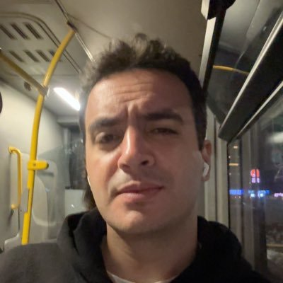

MSc Electrical and Electronics Engineering
Mersin University, Sep 2025 - Present. Thesis-based program with an artificial intelligence focus.

Computer Engineer & EEE MSc Student
Computer Engineer and Electrical and Electronics Engineering MSc student from Turkey.
Focusing on my AI-oriented master's studies and the application of artificial intelligence within electrical and electronics engineering.
Open to research projects and artificial intelligence-related opportunities aligned with my graduate studies.
Get in touchMy background in computer engineering led me to pursue graduate study in electrical and electronics engineering, where I am interested in exploring applications of artificial intelligence across engineering problems.
I'm Furkan Eskil, a Computer Engineering graduate from Cukurova University and a thesis-based Electrical and Electronics Engineering MSc student at Mersin University.
I worked as a Software Engineer at Maksopus, exploring and prototyping communication between applications and server-side systems. My other experience includes software development internships at Provera, Select Bilisim and Ploud.
I am currently focused on my AI-oriented master's studies and especially interested in applications of artificial intelligence within electrical and electronics engineering.
My background in computer engineering led me to pursue graduate study in electrical and electronics engineering, where I am interested in exploring applications of artificial intelligence across engineering problems.
I'm Furkan Eskil, a Computer Engineering graduate from Cukurova University and a thesis-based Electrical and Electronics Engineering MSc student at Mersin University.
I worked as a Software Engineer at Maksopus, exploring and prototyping communication between applications and server-side systems. My other experience includes software development internships at Provera, Select Bilisim and Ploud.
I am currently focused on my AI-oriented master's studies and especially interested in applications of artificial intelligence within electrical and electronics engineering.
Mersin University, Sep 2025 - Present. Thesis-based program with an artificial intelligence focus.
Cukurova University, graduated June 2025. Language of instruction: English.
Short-term internship in Istanbul.
Explored and prototyped communication between applications and server-side systems.
Short-term remote internship.
Observed and contributed to web application development processes at a small technopark startup.
Unix-like systems and command-line tools.
M. Akgul Free Software Camp and Cisco Networking Academy.
Placed 3rd at University4Society Startup Weekend, joined the acceleration program and completed an incubation program at AGM.
Reach out regarding research projects and artificial intelligence-related opportunities aligned with my graduate studies, or for a thoughtful technical exchange.